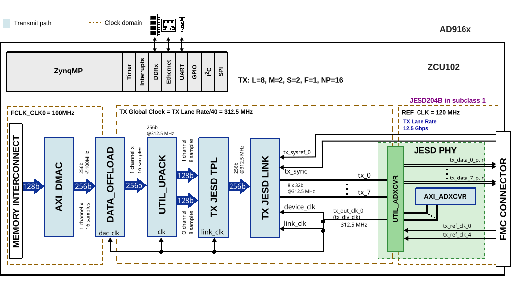

User guide
This page summarizes the AD916x evaluation flow using the ADI HDL reference design and links to the original board and project documentation.
Hardware guide

General setup
The AD916x-FMC setup is validated on ZCU102 through HPC0. The evaluation board can be operated from the on-board clock generator or an external clock source, depending on the JESD mode and lane-rate target.

Clock source selection
The HDL project documentation defines clock source jumper use for EVAL-AD916x:
Jumper |
Position |
Function |
|---|---|---|
JP1 |
Mounted |
Use on-board clock generator |
JP1 |
Unmounted |
Use external clock source |
For example, AD9163 mode 2 builds at high lane rate may require external clocking with JP1 removed.
SPI and control connectivity
In the AD916x HDL design on ZCU102, PS SPI0 is used to control these devices:
AD9508
ADF4355
AD916x device
The HDL project also defines GPIO and interrupt mappings for ZCU102, including DMA interrupt and JESD link interrupt paths.
Reference details are documented in the AD916x HDL project SPI section.
Schematic, PCB Layout, Bill of Materials
Design files for the EVAL-AD916X evaluation board include:
Schematics
PCB Layout
Bill of Materials
Design package
Please refer to the EVAL-AD916X Product Page for downloadable design files.
Software guide
The evaluation board is supported with the Libiio library. This library is cross-platform (Windows, Linux, Mac) with language bindings for C, C#, Python, MATLAB, and others. One easy to example that can be used with it is: